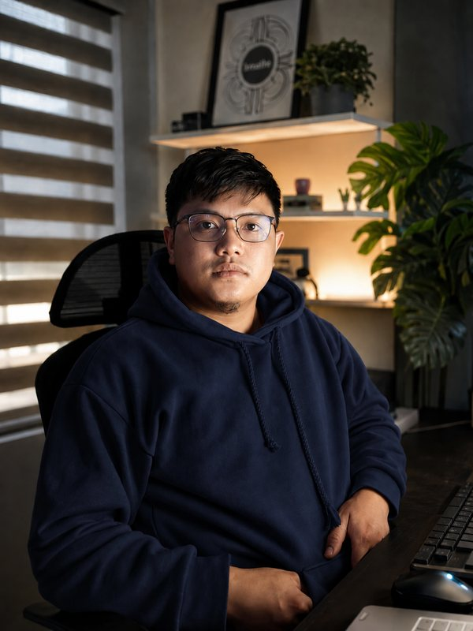

I build websites that look sharp and actually convert.
Nearly six years turning brands into clean, fast, user-friendly websites. WordPress development, graphic design, content writing and on-page SEO under one roof, sped up with AI tools so you get the work back faster.
Most projects need a designer, a developer, a writer and an SEO. I cover all four, which keeps the build tight and the timeline short.
Web Design
Layouts built around what the visitor is actually looking for: clear hierarchy, obvious calls to action, and a look that fits the brand instead of a stock template.
WordPress Development
Full builds in Elementor, Divi, Bricks or Wix. Clean structure, proper page settings, and a back end the client can actually update without breaking anything.
Graphic Design
Brand visuals that match the site instead of fighting it: social graphics, banners, hero imagery, icons and the small assets that make a page feel finished.
On-Page SEO
Titles, meta descriptions, heading structure, image alt text, internal links and schema, handled during the build rather than bolted on after launch.
Content Writing
Page copy written for the people who land on it: plain language, real detail about the service, and the answers a buyer needs before they pick up the phone.
AI-Assisted Workflow
AI tools handle the repetitive parts of a build so more of the budget goes into design decisions, revisions and quality checks. Faster turnaround, same standard.
Everything your site needs, from one developer.

Years Experience
5+
Agencies Worked With
2
Page Builders Mastered
4
Computer Science
BS
Selected Work
Sites I have designed and built.
Client builds across compliance, coworking and marketing. Click any screenshot to read the full page.
Service Business
Kunzler Consulting
conversion copy
trust signals
Fleet Compliance & Filing
Compliance filing for trucking fleets, which is a dry subject. Solved with a dark highway hero, a "what we file for you" panel spelling out IRP, IFTA, 2290 and UCR, and a credibility bar directly under the fold.
Coworking Space
Westend Business Hub, Synnot Street
pricing
local seo
Werribee, Victoria, Australia
A coworking space on Level 6 of the Holiday Inn Werribee building. The hero pairs the pitch with a glass "at a glance" card covering hours, 24/7 access, parking and the day pass price, a contact strip sits right under the fold, and pricing, amenities, a gallery and member reviews follow.
Consultancy
Auditum
video hero
service pages
NDIS Compliance · Werribee, Victoria
NDIS compliance support, a subject that can feel heavy. A video hero introduces the consultant, a "What do you need help with?" grid routes providers by situation, and a navy services panel lists everything from registration support to staff training.
Website Template
Agencee
elementor
agency
WordPress template
A WordPress template for digital marketing agencies. A black and red hero with a bold headline over a team photo, service cards, a stats band, case study cards with results, video testimonials, pricing plans, a blog grid, an FAQ accordion and a large "Let's Talk!" contact form.
I'm Francisco R. Beton Jr., a web developer with nearly six years of experience in WordPress development and graphic design. I build clean, user-friendly websites and visuals tailored to each brand, using AI tools to work smarter and faster.
5+
Years inside working agencies, shipping client work on real deadlines.
ElementorDiviBricksWix
“
One person who can handle the layout, the words and the technical side without three separate handoffs.
Francisco R. Beton Jr.WordPress Developer & Graphic Designer
Bachelor of Science in Computer Science · Western Mindanao State University, 2015–2019
I also bring skills in content writing and on-page SEO, so the site does not just look good in a mockup. It loads fast, reads clearly, and gives search engines a reason to rank it. That mix is the whole point: one person who can handle the layout, the words and the technical side without three separate handoffs.
I hold a Bachelor of Science in Computer Science from Western Mindanao State University, and I have spent the last five years inside web and marketing agencies shipping client work on real deadlines.
We talk through the business, the audience and what the site has to do. I come back with a page list and a direction.
02
Design
You see the homepage design first. We settle the look there before a single inner page gets built.
03
Build
Full build on your chosen platform, responsive from the start, with SEO and image optimization handled inline.
04
Launch
Final QA on desktop, tablet and phone, forms tested, then handover with a walkthrough so you can run it yourself.
Common Questions
Before you send the brief.
How long does a site take?
A standard multi-page business site runs about two to three weeks from approved design to launch. A single landing page is usually under a week. Content delays are what stretch timelines, so the sooner I have your copy and photos, the sooner it ships.
Which builder should I use?
Elementor if you want the widest plugin support, Bricks if speed matters most, Divi if you already have a Divi license, Wix if you want the simplest possible back end. I will recommend one based on your project rather than defaulting to a favorite.
Do you write the content too?
Yes. Content writing is part of what I do, and pages written during the design phase always fit the layout better than copy pasted in afterward. If you already have copy, I will edit it for structure and on-page SEO instead.
Will it work on mobile?
Every build is checked on phone, tablet and desktop before handover, including form behavior and tap targets. More than half of most sites' traffic is mobile, so it is not treated as an afterthought.
Can I update the site myself?
That is the goal. I keep the page structure clean and named sensibly, and I walk you through editing text, swapping images and adding pages at handover so you are not calling me for every small change.
Do you handle SEO after launch?
The on-page side is built in: titles, meta descriptions, headings, alt text, internal links and schema. Ongoing off-page work such as link building and content campaigns is a separate conversation, and I am happy to have it.
Contact
Let's build it.
Tell me about the project. I reply to every inquiry, usually within one business day.